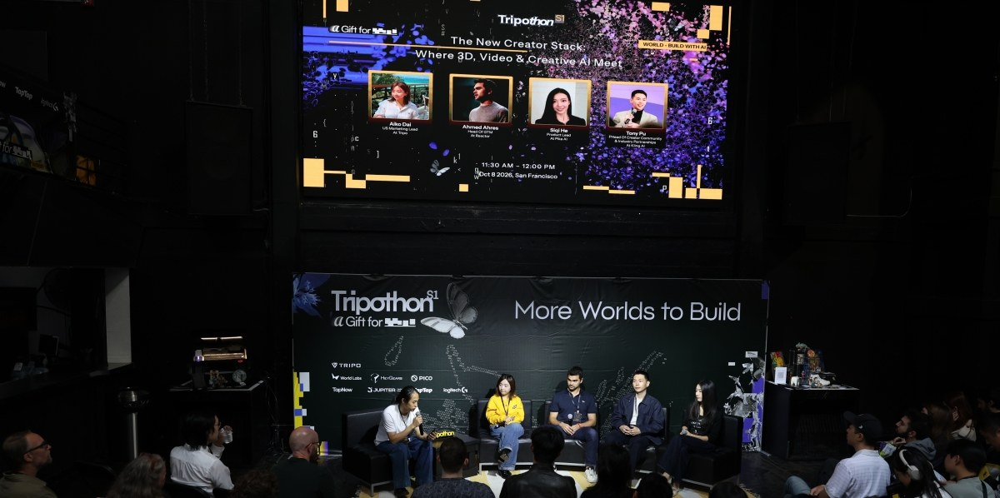

01
Tripo 黑客松案例：對話生成尋寶物件，AI 模型銜接實體設計
來源日期 2026-11-11
Tripothon S1 的參賽案例把 3D 生成接進遊戲與實體產品：Halls of History 依玩家對話生成尋寶物件，Gemtronic 則先生成戒指外殼候選，再送往 CAD 細修。

AI 3D ★★★★☆
完整分析
技術流程：生成融入互動規則
Halls of History 以 World Labs 的 Marble 建立高斯潑濺房間，再放入 Tripo 物件；Tripo API 依對話產生不同尋寶道具，玩家組合物件解謎並開啟下一個房間。
製作影響：快速比較外殼方案
Gemtronic 將數位寵物放入智慧戒指，電子零件維持一致、外殼可替換。作者先用 Tripo 比較外形，再把選定方案送入 CAD 精修與實體製作，生成物因此扮演設計候選的角色。
成熟度限制：案例不等於量產驗證
報導明確指出生成戒指模型不是直接完成的製造資產；對世界模型的主流製作應用，也仍須解決控制、一致性、可靠輸出、最佳化及可修改性，不能將黑客松成果視為完整量產流程。
BRIEF｜來源已驗證；證據深度較有限，完整分析會明確區分已知資訊與待驗證事項。